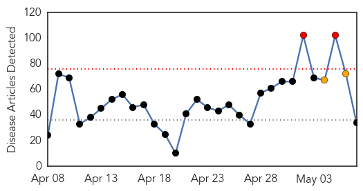
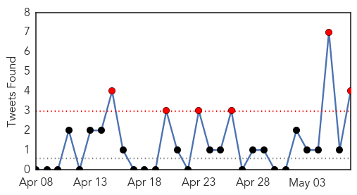
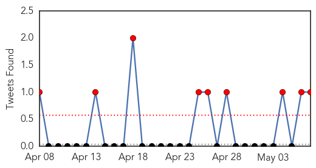
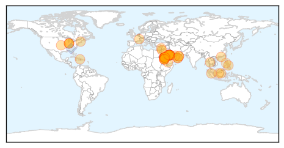
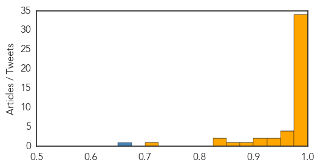

Unknown
30-Day Web Trend
2 alerts, 2 warnings

30-Day Twitter Trend
6 alerts, 0 warnings

Article Locations


Article Confidences

Top Articles:
- 0.990
- Indiana reports no new MERS cases
- 0.987
- Mers patient in US improving
- 0.985
- First U.S. MERS Patient Will Be Isolated At Home After Hospital Discharge
- 0.970
- First Ever H5N6 Death Case Confirmed in China
- 0.969
- Two Dead and Three in Quarantine as Indonesia MERS Fears Build
- 0.924
- Polio's History—and Why It's Again Becoming a Threat
- 0.917
- Chicago Tribune
- 0.917
- Chicago Tribune
- 0.910
- Saudi hospital head sacked as MERS death toll hits 117
- 0.891
- Who’s to Blame for Global Polio Emergency?
- 0.866
- Yemen says kills militant behind killing of French security agent
- 0.866
- Putin says Russia has withdrawn forces from Ukraine border
- 0.866
- Pro-Russians in Ukraine's Donetsk to discuss Putin's call on referendum
- 0.866
- Russia urges immediate end to Kiev security operation in east
- 0.866
- China Confirms First Death from New Strain of Bird Flu
- 0.862
- Polio warning by Who should put all nations on guard
- 0.845
- The Voice of Russia: News, Breaking news, Politics, Economics, Business, Russia, International current events, Expert opinion, podcasts, Video
- 0.742
- Swine Virus Seminar includes TVMDL Amarillo
- 0.725
- Al Jazeera English
- 0.706
- The Voice of Russia: News, Breaking news, Politics, Economics, Business, Russia, International current events, Expert opinion, podcasts, Video
- 0.703
- GaitTrack app makes cellphone a medical monitor for heart, lung patients
- 0.673
- Our Ability to Cope with Food Poisoning Outbreaks Has Not Improved Much in 50 Years
- 0.659
- World faces polio threat
- 0.652
- Punjab brings in own polio restrictions
- 0.635
- Pakistan bracing for polio travel restrictions
- 0.607
- Ghana, Business Advice, Jobs, News, Business Directory, Real Estate, Finance, Forms, Auto
- 0.603
- Pakistan seeks time on polio travel restrictions
- 0.603
- Chinese Scientists Announce H7N9 Treatment Breakthrough
- 0.597
- Phone App Monitors Heart, Lung Symptoms
- 0.582
- The 5 Most Commonly Overdiagnosed Conditions
- 0.572
- Syria polio outbreak: Medical access vital
- 0.564
- EU worries over pig virus prompt new blood import rules
- 0.562
- Sanofi Partners Lagos to Improve Access to Medicines, Articles
- 0.530
- Significant decline in deaths after Massachusetts’ health reform
Top Tweets:
- 0.729
- 5 countries introduce rotavirus vaccine over last 2 wks w support Congo R Angola Haiti Zimbabwe Madagascar vaccineswork
- 0.666
- RT: From SaudiArabia WHO has been informed of 406 lab-confirmed Middle East respiratory syndrome cases incl 101 deaths (3 May 2014) …
- 0.662
- RT: On 15 April 2014 Yemen notified WHO of an additional lab-confirmed Middle East respiratory syndrome cases MERS
- 0.517
- RT: WHO experts team completed a 5-day mission to SaudiArabia assisting natl health authorities on Middle East respiratory syndrome …
MERS
30-Day Web Trend
29 alerts, 0 warnings

30-Day Twitter Trend
9 alerts, 0 warnings

Article Locations
Article Confidences
Top Articles:
- 1.000
- Egypt reports its first case of MERS virus
- 1.000
- The Chicago Defender
- 0.999
- Head of Jeddah hospital replaced as Saudi fights MERS virus
- 0.999
- Respiratory syndrome ‘next threat’
- 0.999
- Haj Seasons at Risk Due to Rising MERS Virus Cases in Saudi Arabia
- 0.999
- US Mers patient improving, ready for discharge - Emirates 24
- 0.999
- WHO mission finds infection control gaps fueling MERS surge
- 0.999
- Saudi Arabia detects 7 more MERS cases; Jordan reports death
- 0.999
- Should we worry about first MERS case in United States? - Local News
- 0.998
- New coronavirus death reported in Jordan
- 0.998
- Saudi hospital head sacked as MERS death toll hits 117
- 0.998
- No MERS Cases in Lebanon, Measures are Sufficient — Naharnet
- 0.998
- No MERS Cases in Lebanon, Measures are Sufficient — Naharnet
- 0.998
- MERS Watch: Infection Control 'Breaches'
- 0.998
- Official: US MERS patient's first symptoms preceded travel
- 0.997
- Middle East respiratory syndrome coronavirus (MERS-CoV) – update
- 0.997
- Another man dies from suspected MERS
- 0.996
- Saudi replaces head of Jeddah hospital as it fights MERS rise
- 0.996
- Case of suspected Middle East Respiratory Syndrome (MERS) under CHP investigation
- 0.995
- Saudi hospital head sacked as MERS death toll hits 117
- 0.994
- Mers cases reach more than 400
- 0.993
- Hospital workers, patient’s family test negative for MERS
- 0.993
- News Scan for May 07, 2014
- 0.991
- Borneo , Malaysia, Sarawak Daily NewsBorneoPost Online
- 0.991
- Minister: Lebanon hospitals prepared for MERS
- 0.990
- Jordanian dies of MERS virus
- 0.990
- Farsnews
- 0.988
- MERS-stricken hospital gets new managers; death toll now at 117
- 0.987
- Saudi hospital head sacked over MERS panic
- 0.986
- Saudi hospital head sacked over MERS panic
- 0.985
- United States Embassy in Oman travel advisory on MERS
- 0.985
- Head of Jeddah hospital fired as Mers toll hits 117
- 0.982
- Negative test results for those exposed to MERS; patient improves
- 0.980
- Top Stories
- 0.969
- Avoid close contact with the sick, medics warnHealthcare
- 0.966
- Oman well prepared for deadly bug says World Health Organsation
- 0.963
- 2nd suspected coronavirus death in Egypt
- 0.952
- Saudi hospital head sacked as MERS death toll hits 117
- 0.927
- Three Pekanbaru residents suspected of contracting MERS
- 0.926
- WHO: Travel ban on Haj not under consideration
- 0.925
- First U.S. MERS patient to be isolated till he is no longer infectious risk
- 0.920
- Three Pekanbaru residents suspected of contracting MERS
- 0.895
- Minor haj trips canceled due to MERS scare
- 0.865
- the edge of knowledge
- 0.840
- School hours reduced amid MERS strikesEducation
- 0.835
- Saudi hospital head sacked over MERS panic
- 0.708
- Filipina nurse from Negros Occidental dies of MERS-CoV in Saudi Arabia
Top Tweets:
- 0.671
- RT: MERS US patient continues to improve. All close contacts who have been tested are negative for MERS-CoV.